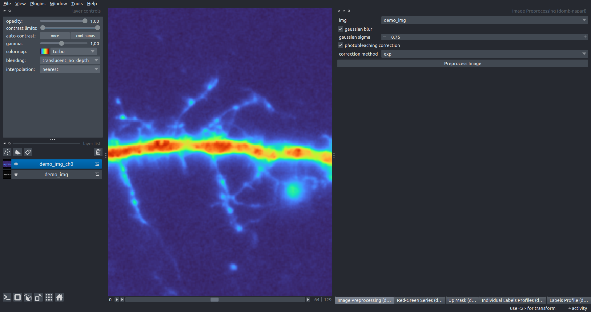
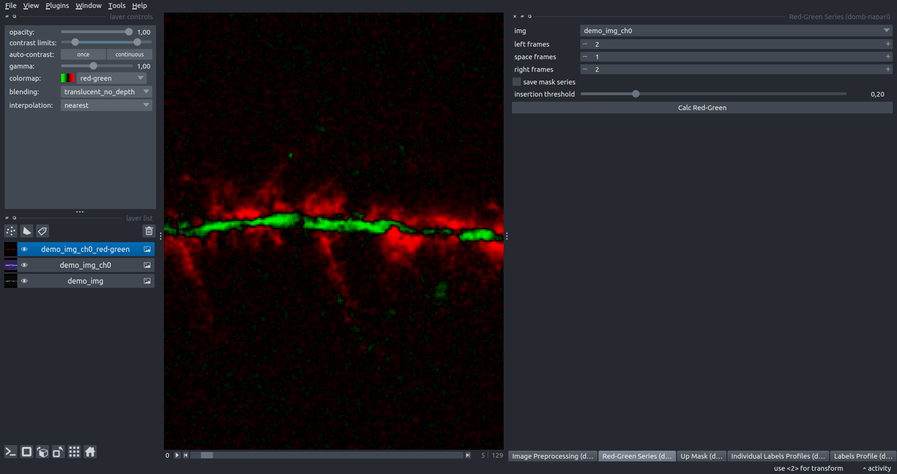
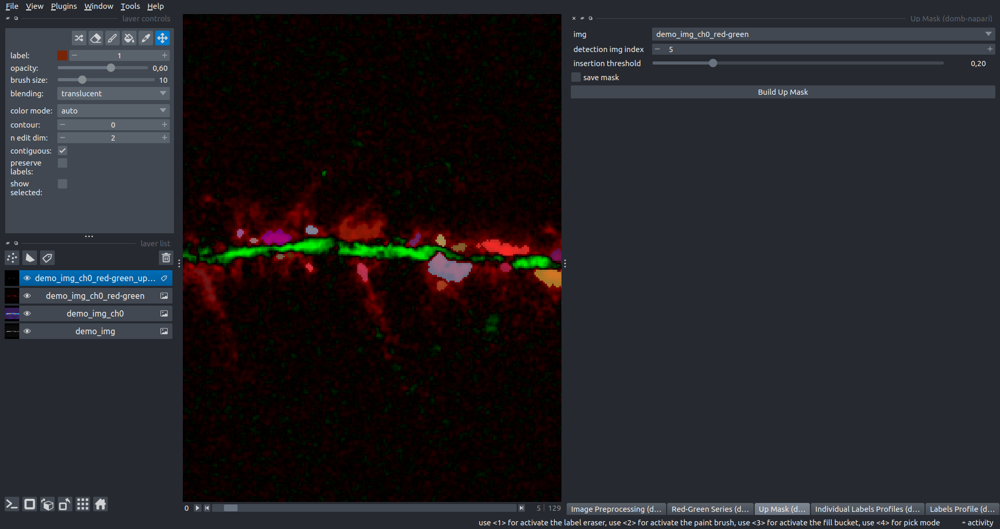

domb-napari
DoMB Tools for napari


A napari plugin offers widgets to analyze fluorescence-labeled proteins redistribution in widefield epifluorescence time-lapse acquisitions. Useful for studying calcium-dependent translocation of neuronal calcium sensors, synaptic receptors traffic during long-term plasticity induction, membrane protein tracking, etc.
 Hippocalcin (neuronal calcium sensor) redistributes in dendritic branches upon NMDA application
Hippocalcin (neuronal calcium sensor) redistributes in dendritic branches upon NMDA application
Widgets
Image Preprocessing
Provides functions for preprocessing multi-channel fluorescence acquisitions:
- If the input image has 4 dimensions (time, channel, x-axis, y-axis), channels will be split into individual 3 dimensions images (time, x-axis, y-axis) with the _ch%index% suffix.
- If the gaussian blur option is selected, the image will be blurred with a Gaussian filter using sigma=gaussian sigma.
- If the photobleaching correction option is selected, the image will undergo correction with exponential (method exp) or bi-exponential (method bi_exp) fitting.

Red-Green Series
Primary method for detecting fluorescent-labeled targets redistribution in time. Returns a series of differential images representing the intensity difference between the current frame and the previous one as new image with the _red-green suffix.
Parameters:
left frames- number of previous frames for pixel-wise averaging.space frames- number of frames between the last left and first right frames.right frames- number of subsequent frames for pixel-wise averaging.save mask series- if selected, a series of labels will be created for each frame of the differential image with the thresholdinsertion threshold.

Up Mask
Generates labels for insertion sites (regions with increasing intensity) based on -red-green images. Returns labels layer with _up-labels suffix.
Parameters:
detection img index- index of the frame from-red-greenimage used for insertion sites detection.insertion threshold- threshold value for insertion site detection, intensity on selected_red-greenframe normalized in -1 - 0 range.save mask- if selected, a total up mask (containing all ROIs) will be created with the_up-masksuffix.

Individual Labels Profiles
Builds a plot with mean intensity profiles for each ROI in labels using absolute intensity (if raw intensity is selected) or relative intensities (ΔF/F0).
The time scale sets the number of seconds between frames for x-axis scaling.
The baseline intensity for ΔF/F0 profiles is estimated as the mean intensity of the initial profile points (ΔF win).
Filters ROIs by minimum (min amplitude) and maximum (max amplitude) intensity amplitudes.
Note: Intensity filtering is most relevant for ΔF/F0 profiles.
Additionally, you can save ROI intensity profiles as .csv using the save data frame option and specifying the saving path. The output data frames %img_name%_lab_prof.csv will contain the following columns:
- id - unique image ID, the name of the input
napari.Imageobject. - roi - ROI number, consecutively numbered starting from 1.
- int - ROI mean intensity, raw or ΔF/F0 according to the
raw intensityoption. - time - frame time point according to the
time scale.
Note: The data frame will contain information for all ROIs; filtering options pertain to plotting only.
Labels Profile
Builds a plot with the averaged intensity of all ROIs in labels. Can take two images (img 0 and img 1) as input if two profiles are selected.
The time scale and ΔF win are the same as in the Individual Labels Profiles.
The stat method provides methods for calculating intensity errors:
se- standard error of mean.iqr- interquartile range.ci- 95% confidence interval for t-distribution.